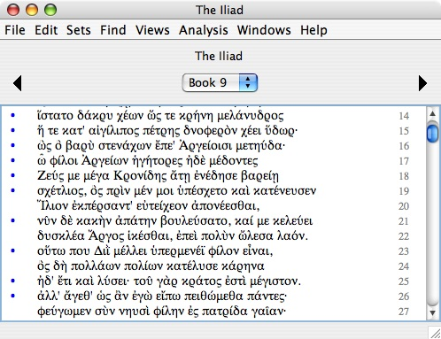
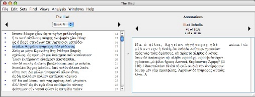
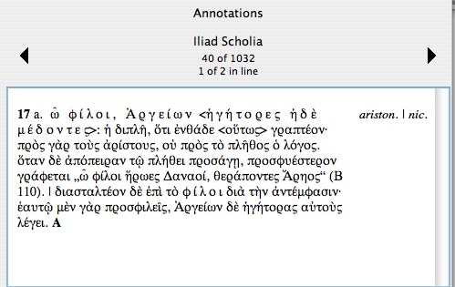
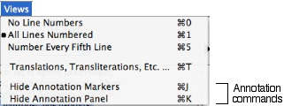

|
|
|
For the benefit of Homer scholars, we have a complete digital version of H. Erbse's Scholia Graeca in Homeri Iliadem implemented as annotations attached to lines of The Iliad.
We also have the "E. K." annotations for Spenser's Shepheardes Calender. The identity of E.K. has never been definitively settled, but many scholars think it was either Spenser himself or someone close to him.
Blue bullets in the left margin indicate the presence of annotations. For example, in The Iliad:

In this example from Book 9, we see that most of the lines displayed have annotations, but lines 20, 22, 24 and 27 do not.
To see the annotations for a line, click the blue bullet next to the line. The window expands on the right to display the annotations. If the window is too close to the right edge of the screen, it is moved left to make room.
The following example shows the expanded window after clicking the blue bullet for line 17.

We had to shrink this screen shot quite a bit to make it fit on this web page. Here's a full-size view of the annotation area on the right side of the window:

In this example, the display shows the first of two annotations for line 17 of Book 9. Book 9 contains 1,032 scholia total, and this one is number 40.
To advance backwards or forwards through the annotations, click the left and right triangles respectively at the top of the panel. For example, to see the second annotation for line 17, click the right triangle.
As you advance through the annotations, the line or lines to which each annotation is attached are hilighted (selected) in the text panel on the left.
The "Views" menu contains two commands for working with annotations:

When you are done working with the annotations, use the "Hide Annotation Panel" command (Command-K) to hide the annotation panel, shrink the work display window back to its original size, and restore its original position on the screen. The name of the command changes to "Show Annotation Panel," and if you select it again, the annotation panel is shown. The shortcut Command-K is a convenient way to toggle the window back and forth between showing and hiding the annotation panel.
To show and hide the blue bullet annotation markers, use the "Show/Hide Annotation Markers" command (Command-J). Annotation markers are shown by default. If you aren't using the annotations, you might like to hide the markers to make the text load faster.
Erbse uses many highly stylized typesetting conventions in his edition of the scholia, including the use of marginalia, mixed Latin and Greek text, superscripts, boldface, italics, macrons, cruces, and Sperrtext. We have attempted to faithfully reproduce these conventions from the printed edition. We assume that scholars are already familiar with how Erbse uses them and what they mean.
|
|
|